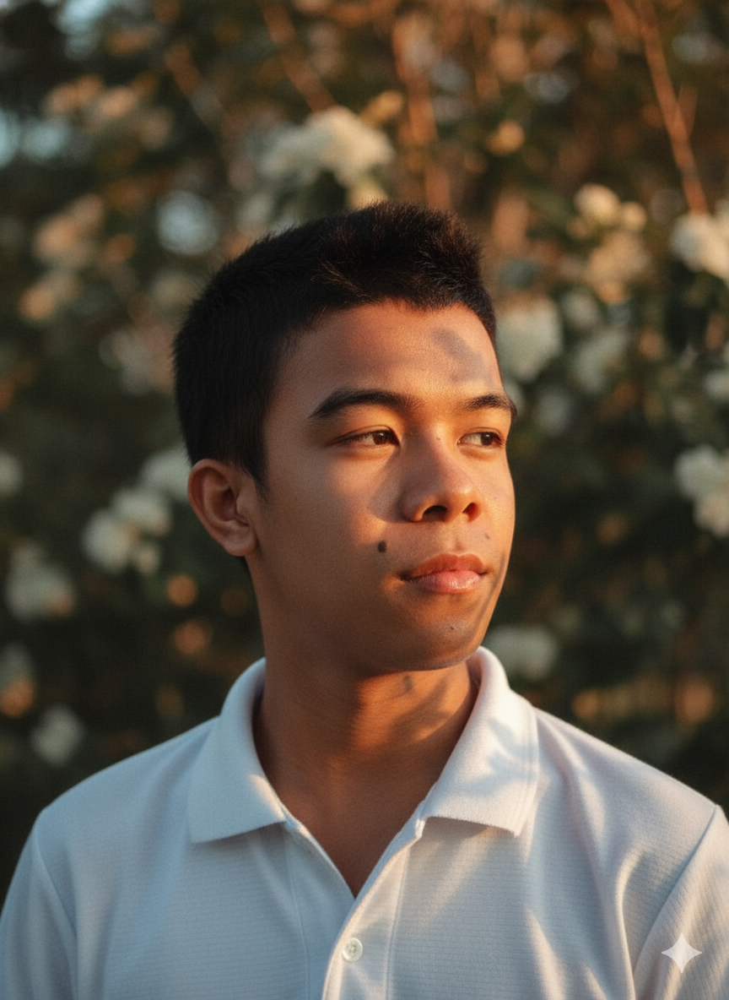

Hello! I'm happy you're here. This is my online space where I share my information, hobbies, skills, and more about myself.
Hey there! My name is Francis Kenneth E. Casilag, i'm 18yrs old, a BSIT 1st year student at BSU Balayan Campus, eager to learn and grow in the world of technology and innovations. With a passion for coding, I'm excited to share my projects as a young IT enthusiast With the world.
Goal 1: To successfully complete my BSIT degree and establish a strong foundation for a future career in technology
Goal 2: To continuously learn and expand my skillset, exploring emerging technologies and trends, and applying them to real-world projects and challenges
Goal 3: To become a successful programmer, and to build a strong professional networks, connect with like-minded individuals, and to have a contribution to tech community, sharing my experiences and learning from others to foster growth and innovations
I enjoy spending my free time to gaming because it helps me relax and escape into different worlds. I also love biking, especially when I get the chance to explore new places and enjoy the fresh air. Another hobby of mine is customizing my motorcycle, which lets me express my creativity and personal style. These hobbies keep me active, entertained, and motivated to learn new things.
Email: kenethcasilag@gmail.com
Facebook: Francis Kenneth Casilag
Instagram: _kenxrld
Phone: 0952-532-1098